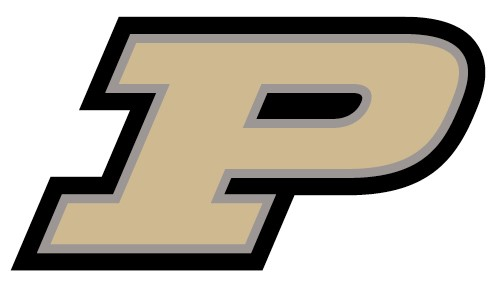
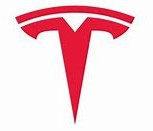
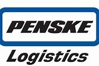

B.S Industrial Engineering
May 2024
Work Experience

Microsoft Corporation (May 2023 – Aug 2023)
Technical Program Management Intern
- Developed a scalable and effective technical strategy to support the rhythm of the business and organizational goals.
- Created and evaluated reports, dashboards, tabular models, and analytical insights to drive efficiency and business solutions.
- Managed project implementation: resource allocation, progress tracking, change control, testing, documentation, and training of technical development and product planning teams.

Tesla, Inc. (Jan 2023 – May 2023)
Logistics Data Analyst Intern - Transportation
- Developed 15+ reports and data visualizations for Key Production Indices (KPIs) to facilitate decision-making across the Service and Energy Logistics Team using SQL, Tableau, R, and Python, catering to both technical and non-technical audiences.
- Collaborated with 15+ third-party carriers, including FTL, LTL, ocean, and rail, to optimize on-time performance and delivery standards while reporting current and accurate transit lead times to internal stakeholders.
- Analyzed the transportation management system to identify process improvements, uncover inefficiencies, and report them to product management teams, while planning for immediate and long-term solutions and following up with stakeholders on timelines causing $200k+ in savings.
- Partnered with stakeholders to automate manual workflows and drive efficiency and compliance in cost audits and material planning using Python and R, reducing 15+ hours of manual work each week.

Penske Logistics LLC – Starbucks RDC (Jun 2022 – Aug 2022)
Logistics Engineering Intern - Warehousing
- Learned the 3PL warehousing processes: receiving, inventory management, allocation, picking, loading.
- Reduced average time to pick an order by 12%, saving $360k per annum by strategically re-slotting over 1500 SKU’s analyzing different attributes like dimensions, weight, demand, hazmat status, etc.
- Developed a dashboard to analyze and flag items that were likely to cause line-downs earlier in the day and suggested increase in the slots and re-plen frequency.
- Drafted and implemented Standard Operating Procedures (SOPs) for inventory management processes.
- Conducted Kaizen analysis, validated Value Stream Maps by conducting time-studies and identifying touch points.